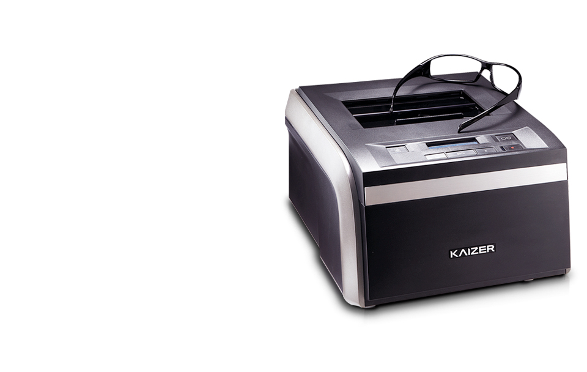

HFR-8000
생각과 행동이 입체적이니까 더 정밀하며 더 완벽하다
- 
제품소개
- - 금속, 플라스틱 등 재질 특성에 맞게 정밀스캔하여 테의 정보를 전송해주는 고감도 스타일러스
- 좌우 동시 스캐닝 뿐만 아니라 한쪽만의 스캐닝으로 대칭작업도 가능
- - 고글과 같이 커브가 큰 테나 반무테, 무테의 경우도 정확한 각도를 인지, 테의 모양을 사실대로 측정하는 3D 입체 스캐닝
- - 오목한 형상, 각진 모서리, 폭이 좁은 테 등 복잡하고 어려운 형상도 문제 없이 정밀 스캔하는 Stylus Tip 채용
- - 제품 내부로 먼지 유입을 막아주는 슬라이드 커버를 채용하였습니다.
제품사양
| Tracing Type | Automatic 3D Binocular Tracing |
|---|---|
| Tracing Mode | Auto, Semi-Auto |
| Tracing Size | Frame ø16.0~92.0mm, pattern ø16.0~84.0mm |
| Frame Material | Metal, Hard Plastic, Soft Plastic |
| Data Processing | FPD, Frame Curve, Circumference, 3D Angle Concave Shape |
| Dimensions / Weight | 284(W) x 320(D) x 190(H)mm / 8kg |
| Power Supply | 100 – 240V, 50 / 60Hz |
| Power Consumption | 32W |